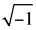
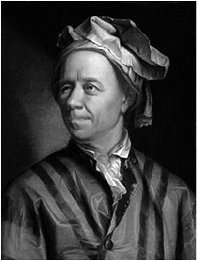
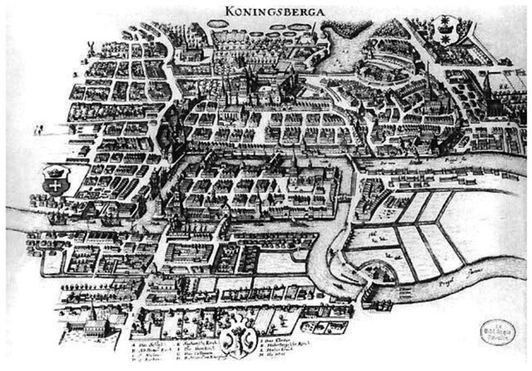
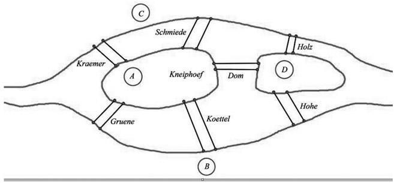
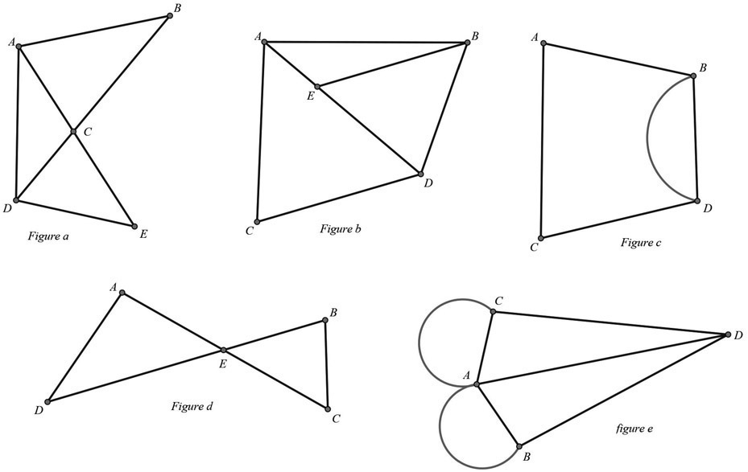
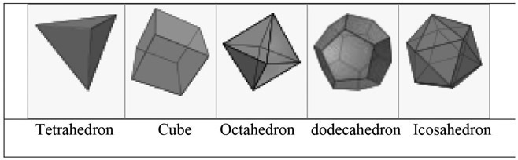

Leonhard Euler: Swiss (1707–1783)
One often wonders from where our many mathematical symbols stem. The answer is quite simple. Perhaps one of the most prolific mathematicians of all time, the Swiss mathematician Leonhard Euler, introduced a significant number of the symbols that we frequently use in mathematics today. Although the Greek letter π was first used by the Welsh mathematician William Jones (1675–1749), it was Euler who through his many publications popularized the symbol to represent the ratio of a circle’s circumference to its diameter. He also used the Greek letter Σ to represent a summation, and the letter i to represent the imaginary number

. He was the first to use the letter e to represent the natural logarithm, which is approximately equal to 2.71828 . . ., and that allowed him to set up the famous Euler identity eiπ + 1 = 0, which uses all of these symbols. Euler also introduced the concept of the function and was the first to write it as f(x). We can thank Euler for the modern notation of the trigonometric functions. Even the way we today label geometric figures such as a triangle—whose vertices are marked with the letters A, B, and C, and whose notation for the sides opposite these vertices use the lowercase letters a, b, and c—stems from Euler’s writings. Euler provided us with our mathematical language, but it resulted from the many volumes that he wrote during his seventy-six-year life span. We must also acknowledge the multitude of innovations that Euler introduced in mathematics. But first, let’s get a brief view into his life’s history.
Figure 23.1. Leonhard Euler. (Portrait by Jakob Emanuel Handmann, pastel on paper, 1753.)
Leonhard Euler was born on April 15, 1707, in Basel, Switzerland. His father was a pastor and his mother was the daughter of a pastor, and he was one of four children. When Leonhard was a small child, his family moved to the town of Riehen, Switzerland, where he lived until age thirteen, at which time he moved back to Basel to live with his maternal grandmother. There, in 1720, the thirteen-year-old Leonhard enrolled as a student at the University of Basel; in 1723, at age seventeen, he received a master’s degree in philosophy, comparing the ideas of Newton and Descartes. It was during that time that his father’s friend, the famous Swiss mathematician Johann Bernoulli, gave him private lessons in mathematics and discovered his unique talents in this field. As a result, Bernoulli convinced Leonhard’s father that his son should pursue a study of mathematics rather than fulfilling his father’s wish of also becoming a pastor. Euler completed his dissertation on the propagation of sound in 1726 but was unsuccessful in obtaining a faculty position at the University of Basel. In 1727, Euler accepted a position in St. Petersburg in the mathematics department at the Imperial Russian Academy of Sciences. This academy was eager to recruit scholars from other European countries and was chiefly interested in research rather than in teaching students. During this time, Euler mastered the Russian language and also took on an additional job as a medic in the Russian Navy. In 1731, he was promoted to professor of physics; two years later, he headed the mathematics department as well, after the position was vacated by Daniel Bernoulli, Johann Bernoulli’s son.
In 1734, Euler married Katharina Gsell, with whom he had thirteen children. Only five of those children survived childhood, and only three survived him. In 1738, apparently through a protracted fever and overwork, Euler lost sight in his right eye. This did not distract him from continuing his work as energetically as he had previously. In 1741, the instability in Russia motivated Euler to take on a faculty position at the Berlin Academy. He stayed there for the next twenty-five years and wrote over 380 articles. During his Berlin years, he also wrote two very famous books: Introductio in analysin infinitorum, on the topic of functions, was published in 1748; and Institutiones calculi differentialis, on differential calculus, was published in 1755. Later, in 1770, he completed a book titled Institutionum calculi integralis. These last two books provide many formulas for differentiation and integration, which compose much of our modern-day calculus course.
In 1766, Euler accepted an invitation from Catherine II to return to Russia, where soon after his arrival in St. Petersburg, a cataract formed in his remaining good eye, which left him totally blind for the rest of his life. Amazingly, this did not reduce his productivity, largely because of his uncommon memory and unusual ability to do mental calculations. He actually claimed that losing sight enabled him to have fewer distractions in his work. With his scribes, he was able to produce even more work than he had previously. Although he was not considered a teacher of mathematics, he did have a great influence on mathematics education in Russia. Euler touched so many areas of mathematics that it would take volumes to summarize all of his work. However, we will cite two results of his genius that still remain relatively popular today, even beyond mathematical circles.
First, there is a famous problem in mathematics that stems from an age-old conundrum that intrigued folks in Europe for many years. We begin with a little bit of historical background so that you will become fascinated by the problem that faced generations of Europeans.1
In the eighteenth century and earlier, when walking was the dominant form of local transportation, people would often count particular kinds of objects they passed. One such was bridges. Through the eighteenth century, the small Prussian city of Königsberg (today called Kaliningrad, Russia), located where the Pregel River forms two branches around an island portion of the city, provided a recreational dilemma: Could a person walk over each of the seven bridges exactly once in a continuous walk through the city? The residents of the city had this as a recreational challenge, particularly on Sunday afternoons. Since there were no successful attempts, the challenge continued for many years.
This problem provides a wonderful window into the field today known as networks, which is also referred to as graph theory, an extended field of geometry. This problem gives us a nice introduction into the subject. Let us begin by presenting the problem. In figure 23.2 we can see the map of the city with the seven bridges.

Figure 23.2. Königsberg.
In figure 23.3, we indicate the island with A, the left bank of the river with B, the right bank with C, and the area between the two arms of the upper course with D. The seven bridges are called Holz, Schmiede, Honig, Hohe, Köttel, Grüne, and Krämer (see fig. 23.3). If we start at Holz and walk to Schmiede and then through Honig, through Hohe, through Köttel, through Grüne we will never cross Krämer. On the other hand, if we start at Krämer and walk to Honig, through Hohe, through Köttel, through Schmiede, and then through Holz, we will never travel through Grüne.

Figure 23.3. Königsberg Bridges Problem.
In 1735, Euler proved mathematically that this walk could not be performed. The famous Königsberg Bridges Problem, as it has become known, is a lovely application of a topological problem with networks. It is very nice to observe how mathematics—used properly—can put a practical problem to rest.
Before we embark on the problem, we ought to become familiar with some basic concepts involved. Toward that end, try to trace with a pencil each of the configurations shown in figure 23.4 without missing any part and without going over any part twice. Make sure to keep count of the number of arcs or line segments, which have an endpoint at each of the points A, B, C, D, and E.
Configurations, or networks, such as the five figures shown in figure 23.4, are made up of line segments and/or continuous arcs. The number of arcs or line segments that have an endpoint at a particular vertex is called the degree of the vertex.
You should notice two direct outcomes after trying to trace the networks as described above: The networks can be traced (or traversed) if they have (1) all even degree vertices or (2) exactly two odd-degree vertices. The following two statements summarize this finding:
There is an even number of odd-degree vertices in a connected network.

Figure 23.4. Networks.
- A connected network can be traversed only if it has at most two odd-degree vertices.
Let’s examine each of the five networks:
Network figure 23.4a has five vertices. Vertices B, C, E are of even degree, and vertices A and D are of odd degree. Since figure 23.4a has exactly two odd-degree vertices as well as three even-degree vertices, it is traversable. If we start at A then go down to D, across to E, back up to A, across to B, and down to D, we have chosen a desired route.
Network figure 23.4b has five vertices. Vertex C is the only even-degree vertex. Vertices A, B, E, and D are all of odd degree. Consequently, since the network has more than two odd-degree vertices, it is not traversable.
Network figure 23.4c is traversable because it has two even-degree vertices and exactly two odd-degree vertices.
Network figure 23.4d has five even-degree vertices and, therefore, can be traversed.
Network figure 23.4e has four odd-degree vertices and cannot be traversed.
The Königsberg Bridge Problem is the same problem as the one posed in figure 23.4e. Let’s take a look at both figure 23.4e and figure 23.3 and note the similarity. There are seven bridges in figure 23.3, and there are seven lines in figure 23.4e. In figure 23.4e, each vertex is of odd degree. In figure 23.3, if we start at D, we have three choices: we could go to Hohe, Honig, or Holz. If we start at D in figure 23.4e, we have three line paths to choose from. In both figures, if we are at C, we have either three bridges or three lines we could go on. A similar situation exists for locations A and B in figure 23.3 and vertices A and B in figure 23.4e. We can see that this network cannot be traversed.
By reducing the bridges and islands to a network problem, we can easily solve it. This is a clever tactic to solve problems in mathematics. You might want to try to find a group of local bridges in your region to create a similar challenge, and then see if the walk is traversable. This problem and its network application is an excellent introduction into the field of topology. Getting actively involved with the various experiments we described above would ensure a genuine understanding of an aspect of mathematics to which most are not otherwise exposed.
Among the enormous number of contributions that Euler made to the field of mathematics, there is one that can appeal very nicely to the novice. Euler established that for any convex polyhedron, the relationship between the number of vertices (V), edges (E), and faces (F) satisfies the following equation: V + F = E + 2, which is rightfully known as the Euler formula. It might be fun to verify this formula with any convex polyhedron you may have available. You might begin with the five regular polyhedra shown in figure 23.5 by counting the number of vertices, faces and edges and see that in each case Euler’s formula holds true.
It should be mentioned that Euler was the most prolific mathematician and scientist, yes, but he was also heavily involved in areas beyond pure mathematics, such as cartography, physics, and astronomy, just to name a few. We still remember Euler today as having contributed to mathematics more volumes of work than any other mathematician in history has. A large number of mathematical objects and topics are named in honor of Leonhard Euler. In fact, he made so many pioneering contributions to several branches of mathematics that some theorems were deliberately attributed to the first mathematician to have discovered them after Euler, in order to avoid naming everything after Euler.
On September 18, 1783, during a discussion with his two assistants on the topic of planetary motion, and more specifically about the recently discovered planet Uranus, Euler collapsed from a brain hemorrhage and died a few hours later. To further exemplify Euler’s productivity, the St. Petersburg Academy continued to publish Euler’s findings for another 50 years beyond his death.

Figure 23.5.